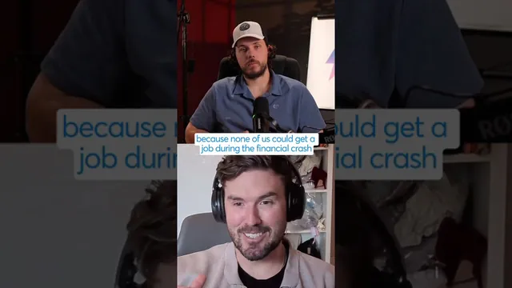

이 사람 때문에 일자리가 사라지고 있다

원본 영상 보기 →
- AI가 대체하는 건 '쉽고 반복적인 부분'이에요
- 피해자 모드는 가장 비싼 선택입니다
- 기술이 느리게 도는 시장을 노리세요
한 줄 요약
회의 예약 AI 에이전트로 GTM 엔지니어와 대행사, 프리랜서 일자리를 없애고 있다는 비판에 개발자가 답합니다. "죄책감은 전혀 없습니다. 적응하지 못하면 도태될 뿐이고, 위기에는 항상 기회가 있어요." 짧은 인터뷰 클립이고, 핵심은 피해자 모드 대신 내 강점을 다시 찾으라는 메시지예요.
전체 내용 정리
"죄책감이 없느냐"는 질문
진행자 Eugene이 날카롭게 묻습니다. 수많은 회의를 대신 잡아 주는 강력한 AI 에이전트를 만들면서, 고투마켓(GTM) 엔지니어와 대행사, 프리랜서의 일자리 수천 개를 없앤 데 죄책감을 느끼지 않느냐고요.
예전에는 많은 인력이 필요했던 일을 이제 AI로 처리할 수 있게 됐고, 게스트는 바로 그 최전선에서 이 기술을 만들고 있거든요.
위기에서 기회를 잡아온 경험이 있어요
게스트의 답은 짧습니다. "아주 솔직히 말하면 전혀 없어요. 적응하지 못하면 도태될 뿐입니다."
진행자 Eugene도 자신 역시 같은 기업가라는 점을 짚으며, 극심한 스트레스와 변화의 순간에서 기회를 포착해 왔다고 말해요.
게스트의 경험이 뒷받침합니다. 17살에 대학 학비를 마련하려고 첫 회사를 세웠고, 2008~2009년 금융 위기 때 아무도 일자리를 구하지 못하자 친구 9명을 고용했어요. 모든 상황에는 기회가 숨어 있다는 게 이 경험에서 나온 결론입니다.
프리랜서 시장의 나태함, 그리고 적응하는 법
게스트는 친구를 잃을 수도 있는 말이라고 전제하면서 이렇게 말합니다. 프리랜서가 많은 그 시장에는 일이 쉽고 꾸준하던 시절 만연했던 나태함이 분명히 있었다고요.
큰 도전이 닥쳤을 때 프리랜서나 대행사는 자기가 무엇을 할 수 있는지 고민해야 합니다. 카피라이팅 실력, 시장 접근 방식, ICP(이상적 고객 프로파일) 식별처럼 오래 배워야 얻는 역량은 여전히 큰 기회가 돼요.
문제는 많은 사람이 자기 기술이 어디에 쓰일지 고민하기보다 피해자 행세를 하며 안주한다는 점입니다.
물어야 할 건 이겁니다. 내가 즐기는 일이 무엇인지, 더 잘할 수 있는 일이 무엇인지, 이 AI 시스템을 활용해 어떻게 성과를 낼지.
산업군이나 초점을 바꾸는 것만으로 풀리는 경우도 많아요. 모든 업종이 기술 발전 속도에 맞춰 움직이지는 않으니, 서비스업을 공략 대상으로 삼는 것도 방법입니다. 게스트는 기회는 항상 존재한다는 말로 답을 마무리해요.
핵심 인사이트
- AI가 대체하는 건 '쉽고 반복적인 부분'이에요: 회의 예약처럼 인력이 많이 들던 반복 업무가 먼저 사라집니다. 반대로 카피라이팅, 시장 접근, 이상적 고객 정의처럼 오래 쌓은 판단력은 여전히 값어치가 있어요.
- 피해자 모드는 가장 비싼 선택입니다: 기술 변화를 탓하며 멈춰 있는 동안 기회는 적응한 사람에게 넘어가요. 게스트가 금융 위기 때 친구 9명을 고용한 것처럼, 위기는 판이 다시 짜이는 순간이기도 합니다.
- 기술이 느리게 도는 시장을 노리세요: 모든 업종이 AI 속도로 움직이지 않습니다. 서비스업처럼 아직 느린 시장에서는 같은 역량이 훨씬 비싸게 팔려요.
오늘 당장 해볼 것
- 내 업무를 '반복 업무'와 '판단·관계 업무'로 나눠 목록을 만들어 보세요. 반복 업무 중 AI나 외주 자동화에 넘길 수 있는 것 하나만 골라도 시작입니다.
- 내가 가장 즐기고 잘하는 일 세 가지를 적고, 그중 AI가 대신하기 어려운 것 하나를 이번 달 매출과 연결할 방법을 한 줄로 써 보세요.
- 우리 업종에서 아직 AI를 거의 안 쓰는 경쟁사나 동료를 떠올려 보세요. 그들보다 먼저 자동화할 수 있는 고객 응대 업무 하나를 정해 견적을 문의해 보면 됩니다.